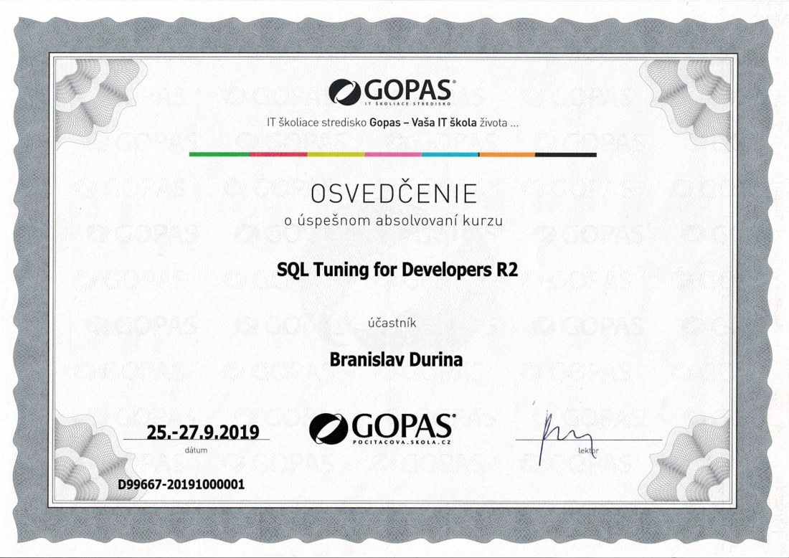
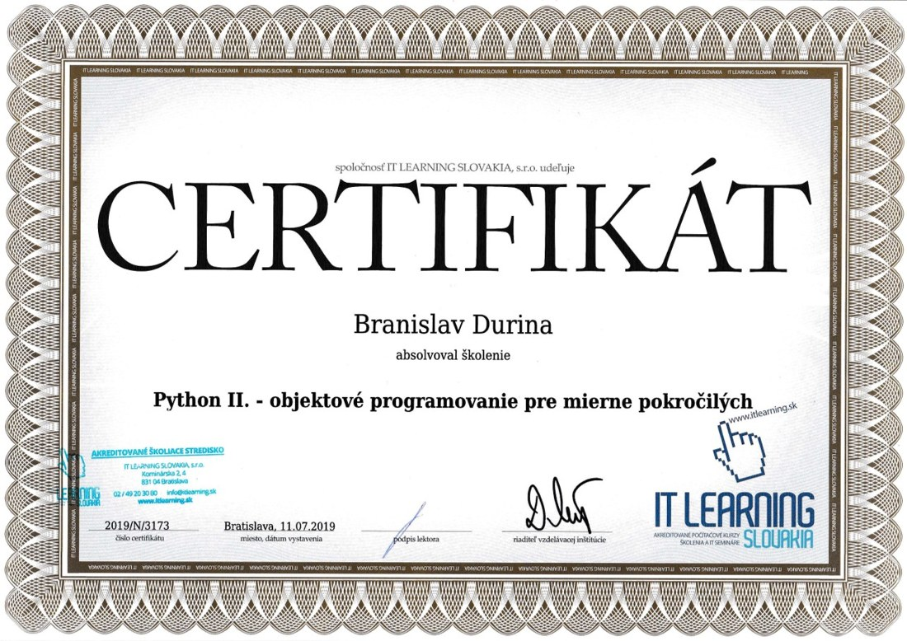

Backend & Middleware
Python, Flask, PHP, Symfony, API-Integrationen, Hintergrundprozesse, XML/XSLT-Transformationen.
Senior Backend, Daten, Zahlungen, AI
Senior Application Developer und AI Architect bei Nexi Central Europe. Ich entwickle Backend-, Middleware- und Datenbanklösungen für Systeme, bei denen Genauigkeit, Leistung und Betriebssicherheit entscheidend sind.
Profil
Mein Schwerpunkt liegt auf kritischen Datenprozessen: Zahlungsabwicklung, Oracle-DB-Reporting, PL/SQL-Tuning, Middleware-Integrationen und Systemen, die für Entwickler verständlich und im Betrieb zuverlässig bleiben müssen.
Python nutze ich als praktisches Werkzeug für Backend, Integrationen, Automatisierung, Reporting und Prototyping. Daneben entwickle ich lokale AI-Workflows, Multi-Agent-Lösungen und RAG-basierte Arbeit mit technischer Dokumentation.
Technologien
Python, Flask, PHP, Symfony, API-Integrationen, Hintergrundprozesse, XML/XSLT-Transformationen.
Oracle DB, PL/SQL, Oracle Forms, PostgreSQL, MySQL, SQL-Tuning, Reporting, Datenarchitektur.
Zahlungsabwicklung, Bank- und Kreditsysteme, Telemetrie, D2000, Enterprise-Datenflüsse.
Lokale LLMs, agentische Workflows, AI-gestützte Analyse, Python-Automatisierung, Git/GitHub.
Erfahrung
Senior Application Developer, AI Architect
Entwicklung und Analyse umfangreicher Anwendungs- und Datenbanklösungen in Zahlungs- und Finanzsystemen. Schwerpunkt auf Oracle/PLSQL, Reporting, Backend-Prozessen, Automatisierung und praktischer Umsetzung von AI-Workflows.
Programmierer und Analyst
Backend für Kreditsysteme, Datenarchitektur, PostgreSQL/PLSQL, Telemetriesysteme mit D2000, SMS-Zahlungs- und Parksysteme, industrielle GSM-Modems, PHP und Symfony.
Programmierer und Analyst
Entwicklung und Wartung von Banksystemen mit Oracle Forms 4.5/6.1 und Oracle DB 8/9/10, einschließlich Anpassungen für die Euro-Umstellung der Slowakei.
Programmierer, Techniker, Administrator
Web- und Intranet-Anwendungen, Portale, Server- und LAN-Administration, technischer Support, Mobiltechnologien und Kommunikationsprotokolle.
Projekte
Digitales Jacht-Übergabeprotokoll. Checkliste und Fotodokumentation bei Übernahme und Rückgabe — Klarheit für Crew und Charterunternehmen.
keeltruth.com ↗Gamifizierte Hausaufgaben-App für Familien. Kinder erledigen Quests, sammeln Punkte und XP, steigen auf und lösen Belohnungen im Familienshop ein.
questkudos.com ↗Zertifikate
Vanderbilt University/Coursera, 4. Juni 2026
Zertifikat verifizierenProfessional Certificate, Google/Coursera, 17. November 2024
Zertifikat verifizierenGoogle/Coursera, 17. November 2024
Zertifikat verifizierenGoogle/Coursera, 22. September 2024
Zertifikat verifizierenGoogle/Coursera, 30. Juni 2024
Zertifikat verifizierenGoogle/Coursera, 9. Juni 2024
Zertifikat verifizierenGoogle/Coursera, 29. April 2024
Zertifikat verifizierenGoogle/Coursera, 31. März 2024
Zertifikat verifizierenVanderbilt University/Coursera, 4. Februar 2024
Zertifikat verifizierenUniversity of Michigan/Coursera, 14. Juni 2021
Zertifikat verifizierenGOPAS, September 2019
PräsenzschulungIT Learning Slovakia, Juli 2019
Präsenzschulung

Kontakt